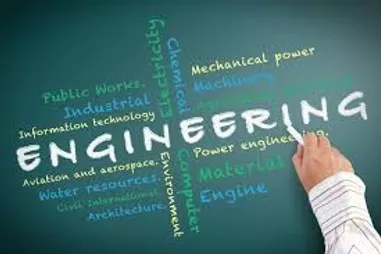

| What is Engineering? Engineering is the systematic application of knowledge and experience to solve problems and to protect and improve lives. He translates thoughts or abstract ideas into reality. Engineering has helped create virtually every artificial object we interact with every day. From cell phones, coffee cups and sneakers to skyscrapers, national weather forecasts, and the Internet, everything is driven primarily by the work of engineers. |
|
|---|---|
|
Why people opt Engineering? The top 5 reasons to opt Engineering are: |
|
| How one can enter into this field? If you want to become an engineer, you must earn a bachelor's degree from an engineering program, majoring in the branch in which you want to work. When it comes to deciding where to study, you may select either an accredited or an unaccredited program, but it is usually in your best interests to opt for an accredited one.Admission requirements and procedures vary by college. It is important that you check with the institutions to which you want to apply to learn about their policies. |
 |
| Branches Of Engineering Mechanical Engineering, Computer Engineering, Electronics Engineering, Civil Engineering, and Electrical Engineering are the top five engineering streams according to MHRD’s AISHE report. Besides these, there are numerous other engineering specializations/branches that candidates can choose from. |